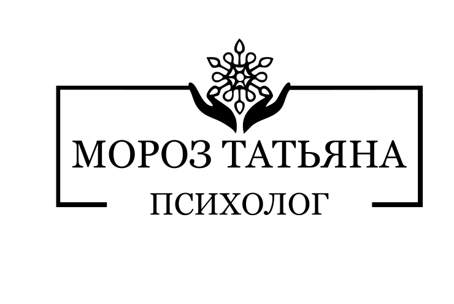
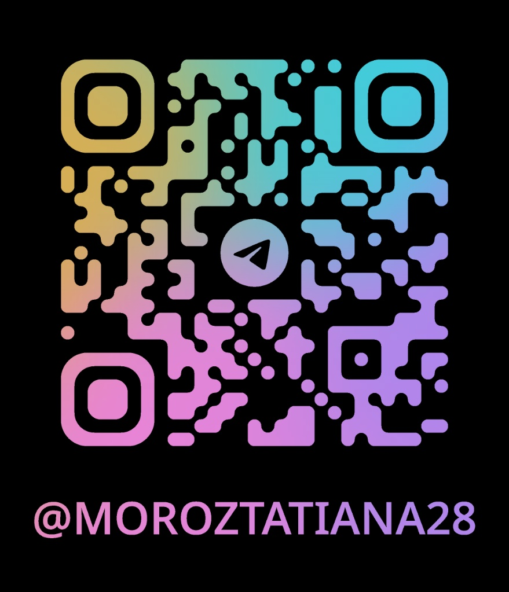

Татьяна Мороз
Психолог | НЛП Практик
Коуч PCC | Консультант
Член ОППЛ


Психолог | НЛП Практик
Коуч PCC | Консультант
Член ОППЛ
Человек-система.
Рада приветствовать Вас на моем сайте! Я практикующий психолог, сертифицированный коуч международного уровня (PPC), НЛП-практик и мастер системы «Бизнес по-русски».
Я помогаю тем, кто строит своё дело — от фрилансеров до владельцев бизнеса, находить ответы там, где обычные инструменты перестают работать.
Я объединяю системный подход к делу с глубокой психологической работой. Мы выстраиваем структуру и одновременно трансформируем то, что блокирует рост в подсознании.
Внутреннее состояние перестает мешать росту и начинает на него работать. Вы обретаете устойчивость для масштабирования проектов без выгорания.
Для комфортной и продуктивной работы нам важно договориться о правилах взаимодействия еще до первой встречи. Ниже основные условия моего психологического сопровождения.
Меня зовут Мороз Татьяна Валерьевна. Я провожу индивидуальные и групповые психологические встречи.
Это профессионально организованный процесс, помогающий человеку или семье восстановить душевное равновесие и обрести новые жизненные навыки. Это пространство для качественных изменений в жизни и укрепления ментального здоровья.
В атмосфере безопасности и доверия мы вместе исследуем привычные сценарии поведения, заменяя их на более эффективные. Моя цель — помочь вам найти внутреннюю опору и открыть новые возможности для развития.
Как психолог, я разделяю с вами ответственность за поиск выхода из сложных ситуаций и помогаю обнаружить ресурсы для преодоления трудностей. Использую проверенные методы, всегда открыто объясняя их суть. Моя практика строится на принципах безусловного уважения, отсутствия оценок и критики. В центре работы — ваша автономия и право выбирать собственный путь.
Для согласования времени или уточнения домашнего задания можно писать в Telegram. Звонки возможны только для срочной отмены встречи.
Внимание: Психолог не оказывает экстренную помощь. В ситуациях кризиса обращайтесь:
Эффективность работы зависит от искренности клиента. Вы имеете право не предоставлять часть информации, но это может осложнить процесс.
Права клиента: выносить любую тему, отказываться от методик и домашних заданий, не отвечать на вопросы, на которые не готовы.
Психолог обязуется безраздельно уделять вам время сессии, не отвлекаясь на посторонние процессы.
Процесс может вызывать неприятные чувства (грусть, вину, гнев). Иногда проблема может временно ухудшиться в начале пути — это нормальная реакция при серьезных изменениях. Если психолог поймет, что не может помочь, он окажет помощь в поиске другого специалиста.
Наши отношения носят исключительно профессиональный характер. Дружеские или романтические контакты неприемлемы. Психолог не инициирует общение в соцсетях и вне кабинета для обеспечения вашей приватности.
Вся информация сохраняется в тайне. Исключение — угроза жизни клиента или других лиц. С вашего разрешения психолог может обсуждать случай с супервизором без разглашения ваших персональных данных.
Телефон: +7 (900) 000-00-00
Связаться в Telegram для записи:

Отсканируйте для быстрой связи